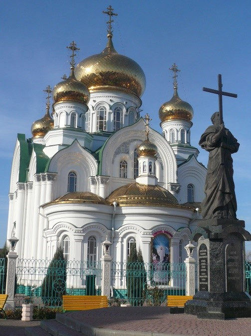
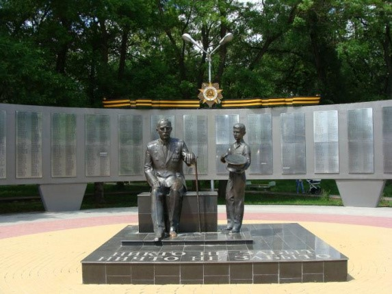
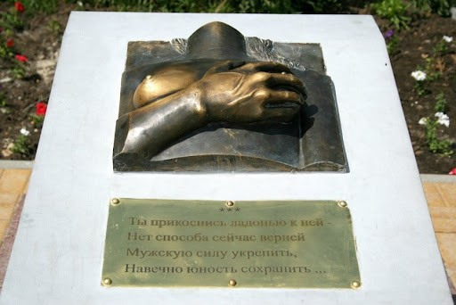
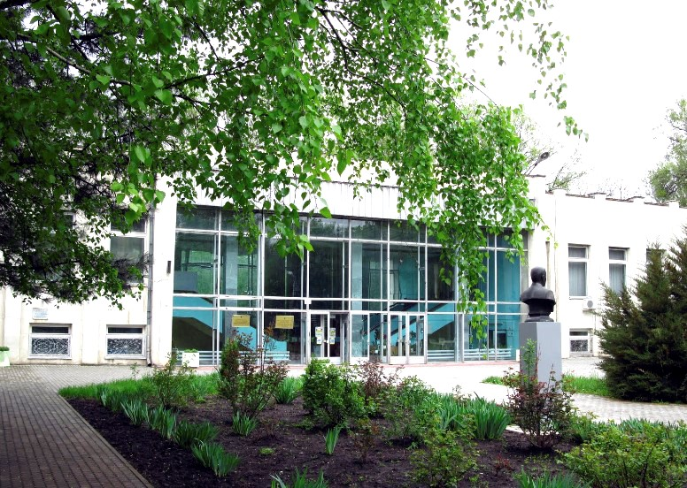

Батайск имеет довольно интересную архитектуру. Самой крупной и красивой достопримечательностью Батайска является Свято-Троицкий храм, который был построен в 2003 году. Ранее здесь стояла церковь, возведенная еще в 1854 году, но с распадом Советского Союза она была разрушена. Ввиду отсутствия церкви службы проводились в кинотеатре, а затем был построен новый красивейший храм. На его территории стоит памятник Андрею Первозванному.

В память о жертвах Великой Отечественной войны в Батайске был установлен мемориал, на котором высечены имена всех погибших жителей города во время обороны в Великой Отечественной войне.

Тут расположен памятник женской груди. Согласно поверью, те, кто потрут это произведение искусства, будут счастливы в любви.

Батайский музей истории
Исторический музей в городе Батайск, Ростовская область. Современное здание музея располагается в Парке культуры и отдыха города по адресу ул. Кирова, 51а. Основой всех экспозиций музея являются экспонаты, рассказывающие об истории города, этнографии, археологии. Фонды музея насчитывают около 9 тыс. подлинных документов, посвящённых истории Батайска